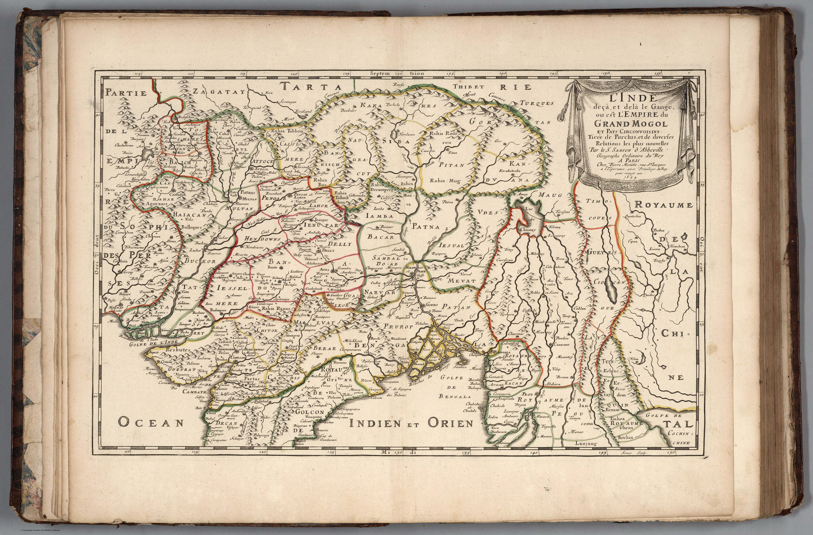
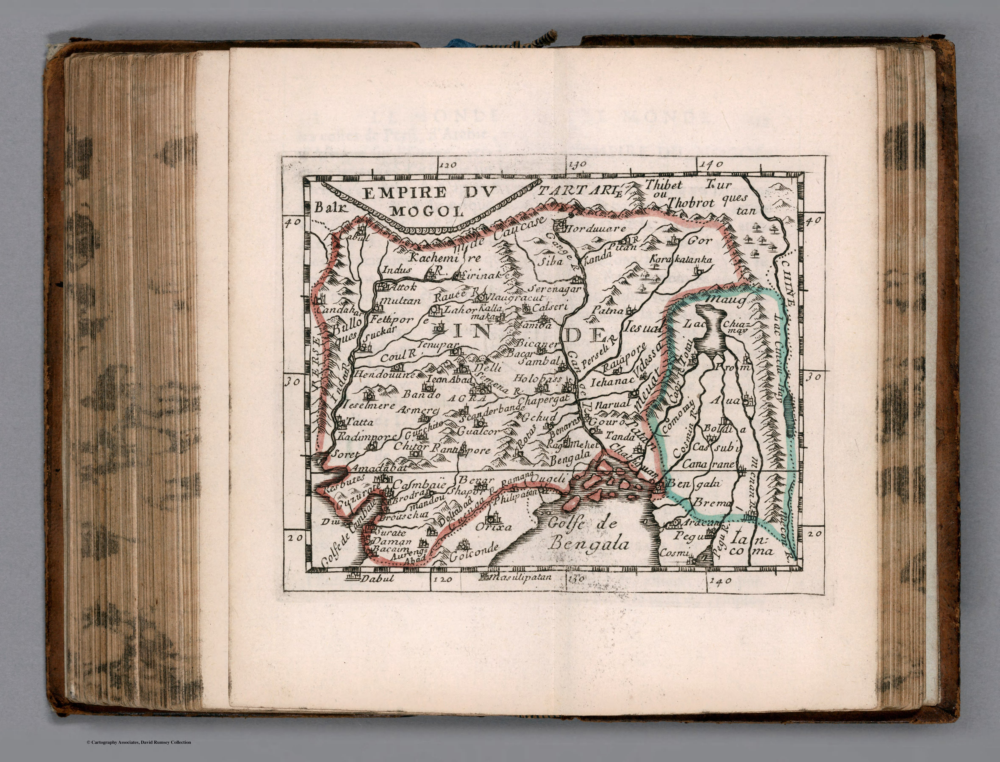
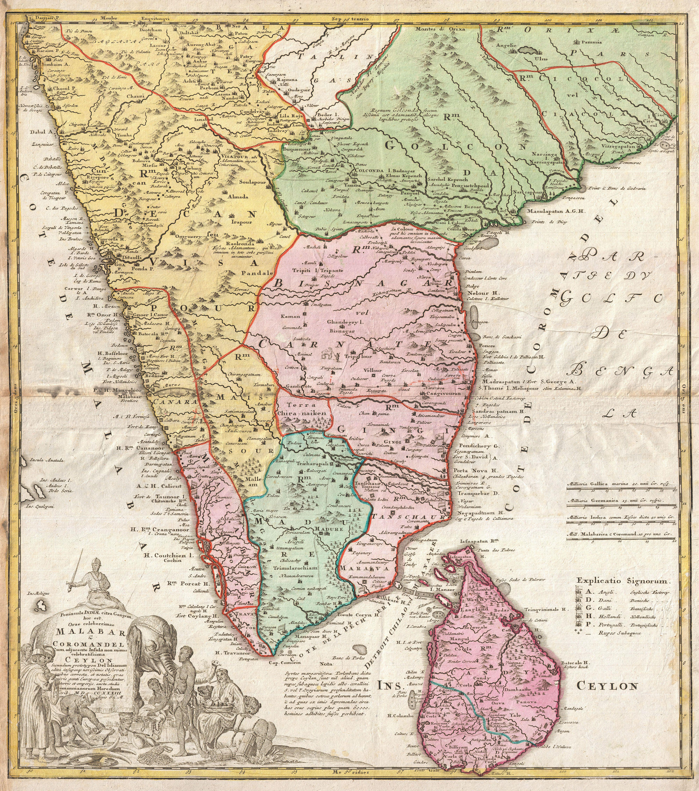
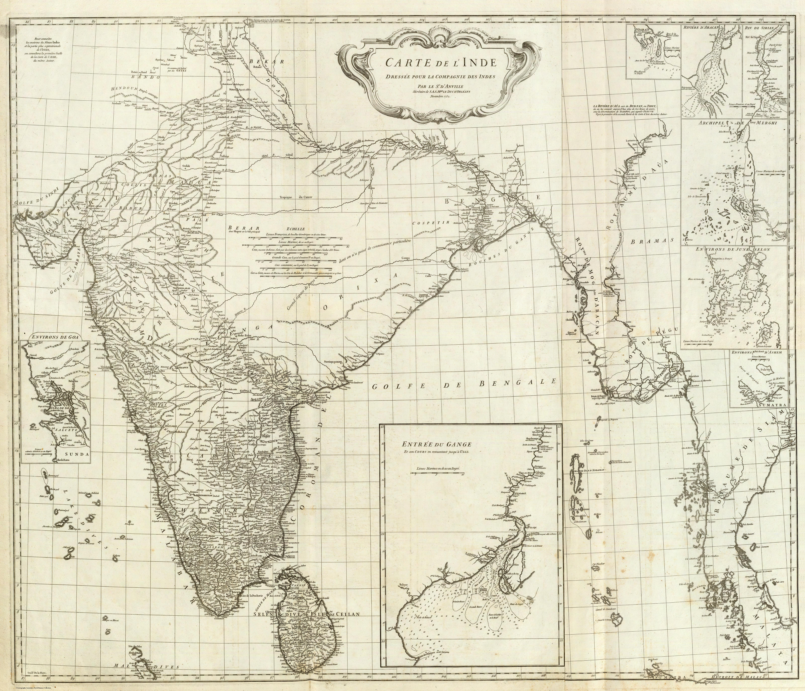
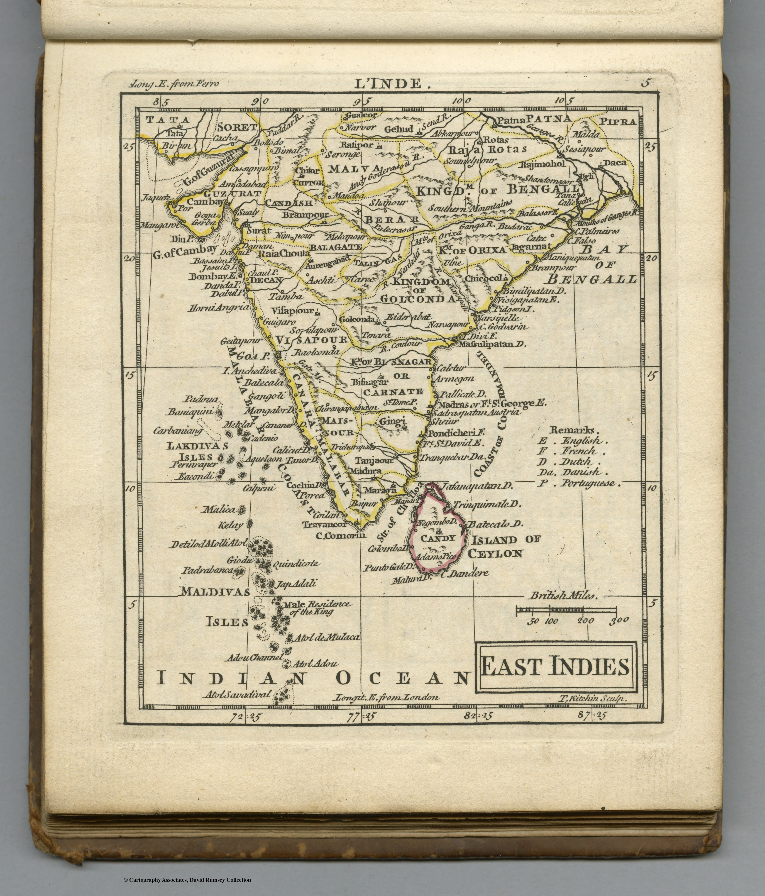

Room 02
Baroque, Mughals and Companies
By the mid-seventeenth century, India is no longer chiefly a coastline at the edge of classical geography. European mapmakers increasingly organise the subcontinent around the Mughal court, the trading companies and the sea routes that connect them. French geographers impose a restrained political order; Dutch, German and Italian publishers turn that order into an atlas commodity. The gaze remains external, but it has become dynastic, commercial and confident: India as an empire to describe, a market to enter and a route to control.

India below and beyond the Ganges, or the Empire of the Great Mogul1654
Empire du Mogol1682 Old Persia and Old India1702
Old Persia and Old India1702
 India and Southeast Asia1703
India and Southeast Asia1703
 The Bay of Bengal, Ceylon, the Maldives and the Andaman Islands1708
The Bay of Bengal, Ceylon, the Maldives and the Andaman Islands1708
 Genealogy of the Mughal Emperors1719
Genealogy of the Mughal Emperors1719
 Carte nouvelle des terres au sud du Grand Mogol1719
Carte nouvelle des terres au sud du Grand Mogol1719

Malabar, Coromandel and Ceylon1733
L’Inde — composite1752 Carte de l’Inde — southern sheets1752
Carte de l’Inde — southern sheets1752

East Indies1763 Les Indes Orientales1779
Les Indes Orientales1779